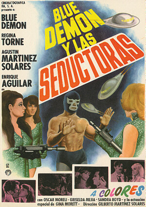

Friday, September the 10th, 2004
back to: title, date or indexes
Dobson was a man of words rather than images, but he had a lifelong interest in the cinema. Long after the words “film” and “movie” had become common parlance, Dobson insisted on referring to “photoplays”. He used to get all het up that he was never invited to vote in those critics' polls of the best films of all time, and once held a candlelit vigil outside the British Film Institute as a protest. It is said that he was regularly arrested for impersonating Ray Milland at seaside resorts, though this is probably one of those stories that get bandied about by mischief makers. In all the millions of words he wrote, however, Dobson had almost nothing to say on the subject of cinema, save for a throwaway remark towards the end of his essay Six Types Of Snodgrass Implement, where he writes: “without any doubt the greatest film of all time is Blue Demon Y Las Seductoras”.
